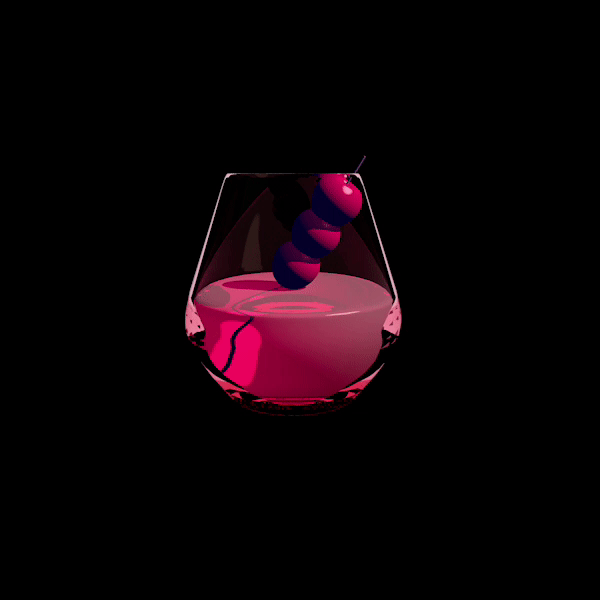

about how many sips to empty a full cup?
→
That will depend on the size of your sips.
I suggest taking a measuring cup filling it to almost a cup (1 cup equals 8 ounces) counting the sips and the doubling the answer to achieve a 16 ounce estimate for your sips.
posted later that day
I get about 32-36 depending on how big of a sip I take for the 24 ounce cup.
posted nearly 2 years later
That depends on how full the cup is, if you have ice in it, and how big your sips are. If you fill it to the top with no ice and your sip is one ounce then it is 16 sips to empty a full cup. ;)
Michele · the next day
Depending how large the sip, I would estimate it to be about 36 for an average sip🤣
George · the next day
one
John A. · 24 days later
1 of 1 found this helpful
Are these very clear? Like, can I put decorative items in them (such as cranberries) and people could see the cranberries clearly?
→
Yes
Yes
Yes
Yes
Yes
Yes
Yes
Yes
Is the edge smooth where you put your lips to drink
?
What material are these glasses made of
→
Are these large enough to collect urine samples?
→
Does salt stick well to the rims, especially when primed with citrus juice?
→
Are the bottoms of these glasses concave so when upside down in the dishwasher, water remains in the bottoms?
→
Can a child easily hold these or are they too big around for little hands
→
My cat like to push my glassware over the counter onto my tile floor. The cups fall an average of 3ft.
Would these glasses survive the fall? →
Are these glasses "seam free" or is there a seam line running vertically down the glass?
→
What is the thickness of the rim? 1/8"? or more? as much as 3/16" or 1/4"?
Looking for a thin rim.
→
Are these buoyant or do they sink?
→
What happens if you put any of these acrylic glasses in the microwave?
every one says not to do it.
→
If i wrote on these with a sharpie, would it stay or smear off?
→
Just confirming is the edge smooth on the rim of the cups made in 2018? I am getting conflicting reviews.
→
it might be a dumb question, but if 16 oz liquid is added, does it reach the top rim or is there a little bit of gap from the top of the cup?
→